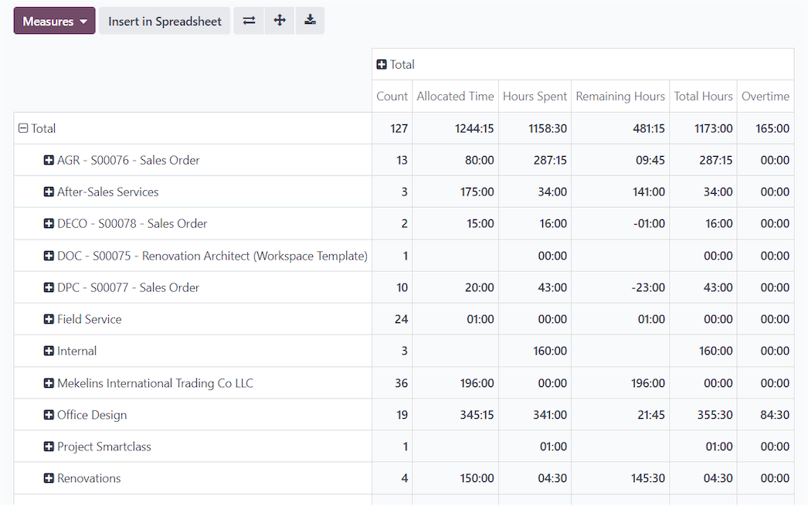

Once every part of Auntie Gaik Lean feeds one system, TechNext builds live dashboards — sales, food cost, labour and best-sellers in one view, ready to act on.
Nothing to copy and paste. Reports and spreadsheets pull straight from the live system, so the figures you're looking at are always today's — not last week's export.

Build a report in a couple of clicks. A friendly pivot view lets you break sales down by dish, by day or by service, and it refreshes itself as new orders come in.

Everything the owners want to see, together. Data is grouped into clear categories and turned into charts, so decisions on menu, staffing and promotions are made on evidence.

Owners and managers can open the same live sheet at once and edit side by side.
All the spreadsheet formulas your team already knows, in an easy menu.
Turn any table into a clear visual in a click.
Conditional formatting flags the numbers that need attention, like a dish quietly losing margin.

Smart filters help you find the one figure you're after without wading through the rest.
The dashboards draw on the same live data running the counter, the books and the store-room.